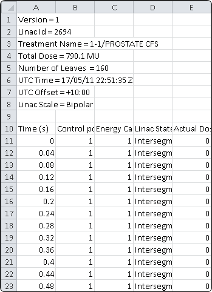
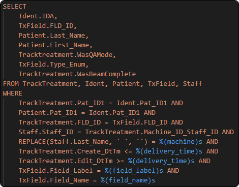
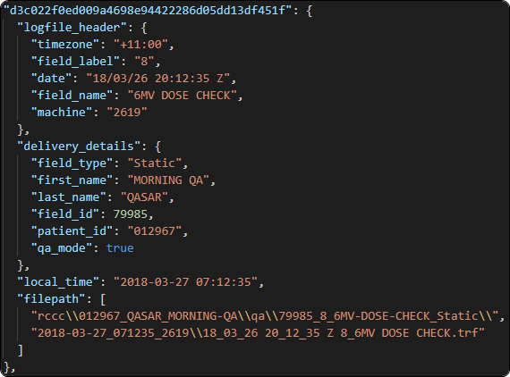

Elekta Logfile Decoding and Indexing¶
Project aim¶
The aim of this project is to have an automated machine record based delivery check between the treatment planning system, the information system, and the Linac for every patient and fraction.
Warning
It is not the intent of this project to replace patient specific QA measurements. Some reasons this is likely not a sufficient replacement:
- Linac reported MLC and Jaw positions are not independent from the machine and a fault resulting in mispositioning of the collimation may not be reported within the logfiles.
- The treatment planning system beam models (as well as potentially any independent calculation software) may not accurately model the MLCs [1], and therefore, checking leaf positon, without a dose measurement, may not be sufficient verification.
Details¶
The diagnostic backups of an Elekta Linac contain the trf logfiles which detail every Linac delivery for the previous 8 days to a time resolution of 25 Hz.
A portion of an example decoded logfile looks like the following:
The logfiles contain information such as MLC and Jaw positions, MU delivered, gantry couch and collimator angles, and more. For a full list of the column names in the logfiles see the logfile config code.
These logfiles can be extracted and then associated to a patient’s record using Mosaiq SQL. This is achieved by aligning the logfile to the recorded delivery time as well as other parameters such as field ID and description the logfile is aligned to Patient Name and ID. Example SQL to achieve this looks like the following:
An index is then created, at this current time the index is json file, but this has issues when the index becomes large. It is expected that a backwards incompatible change will occur in the near future converting the index json format into SQLite. An example entry within this index looks like the following:
This process of extracting and indexing can be set to run at a regular interval so that an up to date logfile index is available.
Post indexing these logfiles can be decoded into csv format for human reading, an MU Density can be calculated, or they can be mapped to a DICOM file for the recalculation of dose.
Basic Implementation¶
Details on how to set up automated logfile exporting and indexing are to be detailed here. Watch this space.
Advanced Implementation¶
Further details that expand the above implementation to multiple sites are to be detailed here. Watch this space.
References¶
| [1] | Gholampourkashi, Sara, et al. “Monte Carlo and analytic modeling of an Elekta Infinity linac with Agility MLC: Investigating the significance of accurate model parameters for small radiation fields.” Journal of Applied Clinical Medical Physics 20.1 (2019): 55-67. https://doi.org/10.1002/acm2.12485. |